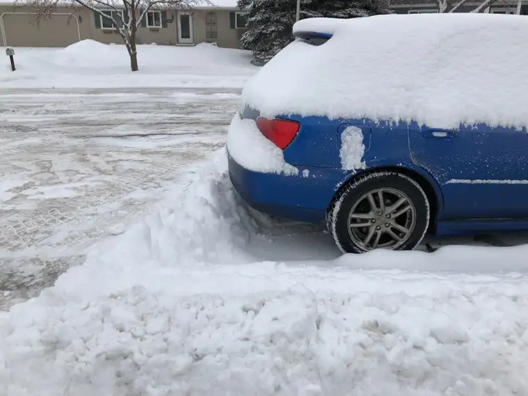

I’ve been pondering how to start this story, ever since that mad moment last week.
Perhaps the best way to begin is to share what it must have looked like for our neighbors who may have happened by their window as that crazed woman with unkempt hair adorned with reading glasses, still wearing her pajamas with no socks and hastily-thrown-on tennis shoes, tore out the front door around 10 AM, running (or trying without slipping on freshly fallen snow atop ice) into the cul-de-sac, chasing after a snowplow that had all but finished the job and was heading north toward the exit.
By all accounts, the woman would have been labeled stark-raving crazy, and on any normal day, she wouldn’t have dared be seen in that state. But this was no normal day, nor time. That woman was on a mission. She was desperate, without a doubt, so there was little thought of appearance, only a need to complete this last-ditch attempt to possibly save her family from one more moment of the incredible stress that had been bearing down on them all in recent days. She had to, because, it seemed to her, they were all at a breaking point. And if not all, well, she knew for certain that she was.
Just a few weeks earlier, this same woman had done something else wholly out of her comfort zone. Though more put together that day, she was every bit as frazzled and weak as now. It wasn’t like her to confront in this way, but she didn’t feel she had a choice. A voice from within had urged her to approach the pharmacist to correct the wrongly applied charge; a financial mistake that normally she may have passed by, but, in that moment, could not. On that day, she had begged God to help, to go before her into the consult room to plead her case. And it was God alone who, as she faced the full-on pride and lack of grace of a fellow human being, brought the tiny moment of victory.
So she knew this day, as she grew closer to the looming, yellow vehicle with its long claw that had left her son’s car — which was to be driven out and serviced soon — surrounded in a snow wall, that she could be met with the same unmerciful glare of weeks earlier. And, in her compromised, fatigued, worried state, she wasn’t sure she could endure it again.

But, she knew, just as before, that she had no choice. The depth of the stress her son and her whole family was under, and the wish to alleviate that just a little, compelled her. She knew that if she didn’t try, it might well be one thing too much, and that her family’s very emotional strength may depend, at least this day, on this moment. So she continued advancing, reluctantly but determinedly, until she reached the door of the snowplow, which had now paused.
As she slid in her unruly state toward the side of the plow, the door slowly opened, and a man looked down from his seat, a question on his face. How could she explain the reason for her frantic face? He listened as she did the best she could, not just about why the car was there, but why she was desperate for it to be released from its snowy wall somehow — adding just a few details why it was so crucial.
At this moment, she couldn’t hold it in any longer, and in a sentence or two, she shared the real reason she was there, the heart of why she’d come out in this dreadful, desperate state: her husband’s heart…
She didn’t say much, really. She didn’t need to. The man, with a tender look of compassion, so different from the pharmacist from a few weeks earlier, simply said, “Oh, that’s a lot. I’ll go back and clear a path for your son to back up and get out.”
Certainly, he had no obligation to help. He had already done the work required of him, and was ready to leave before the woman in the red coat was spotted from his side mirror. He could have kept going. He could have not listened. He could have listened but not cared, fixating only on the work he’d been paid to do and no more.
He had choices on how to respond — free will the same as any of us — and grace was what showed up.
In a daze, because she couldn’t believe how easy it was compared to the pharmacy mishap, she said, “Thank you. Thank you so much,” and began retreating back toward the house, crying more now out of gratitude, realizing she’d just looked upon the face of God in this humble, blue-collar worker who had a heart. It was something she had not seen earlier, and, given everything, that earlier incident had crushed her spirit momentarily. But this time? From this kind soul who had the hard job of hauling snow in the dead of winter? There was no doubt in her mind the divine light was shining down on her from on high the snowplow seat, with these unspoken-but-felt words: “I got this. I got you. I got your whole family. Trust in me.”
As she walked back, approaching the buried, blue car, she was amazed, again, at the amount of snow encircling it. Not only all around, but even on top. “Buried.” The word came to her. That’s how she felt — it’s how her whole family had been feeling lately in different forms. They were, together, walking into a tunnel that seemed inconceivable, surrounded by an icy wall in every direction. They were fully and emotionally buried on all sides.
And yet, there was this light now, on the face of the snowplow guy, and he, in his mercy, would help them un-bury — to find a way, even through the back (something she on her own would not have considered as a solution) — to get them out of and beyond this mess. Maybe not the whole mess, but this one moment of mess at least.
Wiping her tears, she said again, this time into the air, “Thank you,” and slipped inside to begin her day.

If you’ve missed our story, here’s a recap from last week, from the words of the mad woman’s husband.
Q4U: When did you feel desperate? How did God show you the back way out?